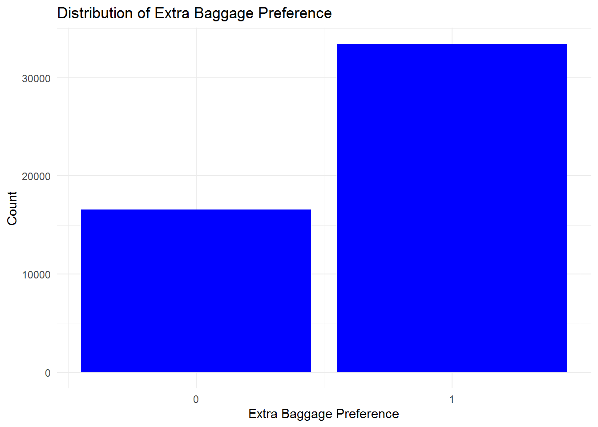
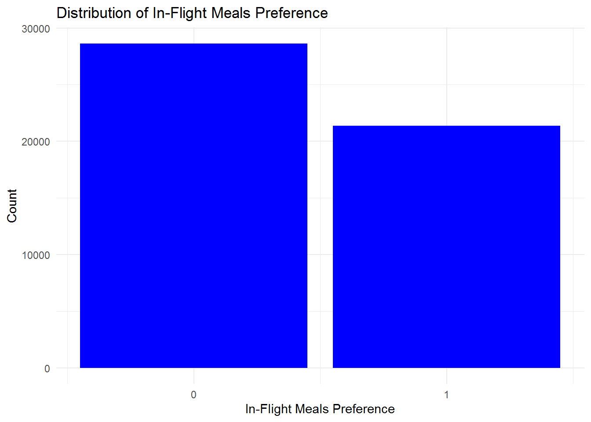
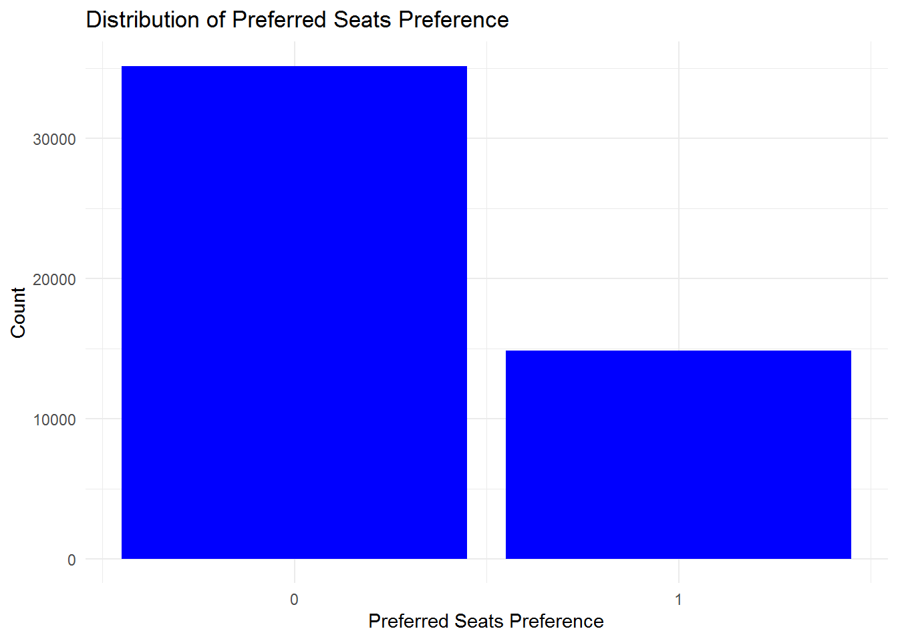

Method
Supervised Learning
For our study on modeling passenger preferences for air travel upgrades, we selected three supervised machine learning techniques: logistic regression, random forest, and neural networks. Each of these models brings unique strengths and suitability for different aspects of our dataset.
Logistic Regression is a foundational tool in statistical modeling and machine learning, particularly adept at binary classification tasks. Its simplicity and interpretability make it a prime choice for initial explorations of binary outcomes such as determining whether a passenger would want extra baggage, to select a seat, or add a meal. Logistic regression provides clear insights through the statistical significance of variables and their coefficients, allowing us to understand the influence of each predictor on the response variable straightforwardly.
Random Forest is an ensemble learning technique that operates by building multiple decision trees and merging them together to obtain more accurate and stable predictions. It is particularly effective for handling datasets with complex structures and high dimensionality without requiring feature scaling. For multiclass classification issues, random forest can manage categorical variables and their interactions effectively, providing importance scores for each feature, which helps in interpreting the driving factors behind passenger preferences.
Neural Networks, with their deep learning capabilities, are well-suited for capturing complex and nonlinear relationships that other models might miss. This makes them extremely versatile for multilabel classification tasks, such as simultaneously predicting preferences across several categories like in-flight meals, seating, and baggage. Although they require more computational resources and are less interpretable than simpler models, neural networks can model intricate patterns in large-scale data, offering potentially higher accuracy and the ability to generalize across various types of data inputs.
Together, these models encompass a broad spectrum of analytical capabilities, from basic statistical inference to complex pattern recognition, ensuring our analysis is both robust and nuanced. This diversified approach not only enhances the accuracy of our predictions but also enriches our understanding of the data’s underlying dynamics.
Data Preprocessing
Before applying the models, we preprocess the data to ensure it is in a suitable format for analysis. This involves removing columns that will not be of use in the models, encoding categorical variables, splitting the data into training and testing sets, and addressing class imbalances.
Removing Unneeded Columns
We remove columns that are not used in any models to streamline the data and reduce computational complexity. This step ensures that the models focus on relevant predictors and avoid overfitting due to irrelevant features or features that are not computationally efficient to create dummies for given their lack of importance.
# R code for Logistic Regression
data_lr1 <- data |>
dplyr::select(-route, -booking_origin, -departure, -arrival)# Python code for Random Forest and Neural Networks
data = data.drop(columns=['route', 'booking_origin', 'departure', 'arrival'])Handling Categorical Variables
Categorical variables such as sales_channel, trip_type, flight_day, and continent are crucial for our analysis. We transform these variables into a format suitable for modeling through one-hot encoding in python and mutating as factors in R.
# R code for Logistic Regression
categorical_vars <- c("sales_channel", "trip_type", "flight_day", "continent")
data <- data |>
mutate(across(all_of(categorical_vars), as.factor)) |>
dummy_cols(select_columns = categorical_vars, remove_first_dummy = TRUE)# Python code for Random Forest and Neural Networks
# Prepare categorical variables with OneHotEncoder
categorical_vars = ['sales_channel', 'trip_type', 'flight_day', 'continent']
ct = ColumnTransformer([('one_hot_encoder', OneHotEncoder(), categorical_vars)], remainder='passthrough')
data_processed = ct.fit_transform(data)Data Splitting
To ensure the reliability of our models, we split the data into training and testing sets. This division allows us to train the models on one subset and evaluate their performance on another, ensuring that the models generalize well to unseen data. We split at a 80/20 ratio to maintain a balance between training and testing data.
# R code for Logistic Regression
# Splitting data into training and testing sets
set.seed(123) # for reproducibility
trainIndex <- createDataPartition(data_lr1$wants_extra_baggage, p = 0.8, list = FALSE)
train_data <- data_lr1[trainIndex, ]
test_data <- data_lr1[-trainIndex, ]# Python code for Random Forest and Neural Networks
X_train, X_test, y_train, y_test = train_test_split(X, y, test_size=0.2, random_state=123)Addressing Class Imbalances
In our dataset, the classes are imbalanced, with some preferences being more prevalent than others. To address this issue, we use the techniques of downsampling or Synthetic Minority Over-sampling Technique (SMOTE) to balance the classes. This ensures that the models do not become biased towards the majority class and can make accurate predictions for all classes.
Note: The plot above shows the distribution of the target variable wants_extra_baggage. There is a clear imbalance towards cases whereby customers often purchased extra baggage.

Note: The plot above shows the distribution of the target variable wants_in_flight_meals. In this case the data was more evenly distrubuted so we decided to leave the classes as they were.

Note: The plot above shows the distribution of the target variable wants_preferred_seat. There is a clear imbalance towards cases whereby customers often did not purchase preferred seats.
To address the class imbalance, for both logistic regression and the neural network, we used downsampling, which involves randomly removing samples from the majority class to balance the class distribution. For the random forest model, we used the Synthetic Minority Over-sampling Technique (SMOTE), which generates synthetic samples for the minority class to balance the class distribution.
# Downsampling for wants_extra_baggage
train_data_baggage <- ovun.sample(wants_extra_baggage ~ ., data = train_data, method = "under", N = sum(train_data$wants_extra_baggage == "0") * 2)$data
# Downsampling for wants_preferred_seat
train_data_seat <- ovun.sample(wants_preferred_seat ~ ., data = train_data, method = "under", N = sum(train_data$wants_preferred_seat == "1") * 2)$data# SMOTE for Random Forest
# Handle class imbalance with SMOTE
smote = SMOTE(random_state=123)
X_train, y_train = smote.fit_resample(X_train, y_train)Model Development and Tuning
This subsection outlines how each model is developed, including the initial setup, parameter tuning, and the specific adjustments made for each type.
Logistic Regression
The logistic regression model is developed using the glm function in R, with a focus on predicting the binary outcomes of wants_extra_baggage, wants_in_flight_meals, and wants_preferred_seat. 3 models were created to predict individually each outcome variable, the decision was made to not include any of the outcome variables in any of the models as they have such strong correlation between eachother. A stepwise backward elimination process based on the Akaike Information Criterion (AIC) was used to refine the model. This process helps identify the most relevant predictors and improve the model’s performance by removing variables of lesser importance.
# Initial logistic regression model
logist_model1 <- glm(wants_extra_baggage ~ . - wants_preferred_seat - wants_in_flight_meals, data = train_data_baggage, family = "binomial")
# Stepwise backward elimination based on AIC
reduced_model <- stepAIC(logist_model1, direction = "backward")Random Forest
The Random Forest model is implemented using the RandomForestClassifier from the scikit-learn library in Python. For the implementation, we took advantage of its inherent capability to handle multiclass classification problems effectively. In the context of our study, where passengers can choose multiple services (such as extra baggage, preferred seating, and in-flight meals), each combination of choices represents a distinct class. This is often referred to as the “power set” of the outcome variables, essentially forming a grid of all possible combinations where each combination is treated as a unique class in a multiclass classification framework.
To accommodate this approach, we combine the outcome variables into a single multiclass target variable, where each unique combination of wants_extra_baggage, wants_preferred_seat, and wants_in_flight_meals is encoded into a distinct label. This transformation allows the Random Forest model to predict the exact combination of services a passenger is likely to choose, leveraging its capability to model complex interactions between features effectively.
# Ensure labels are combined into a single feature and converted to numeric
data['combined_label'] = pd.factorize(data['wants_extra_baggage'].astype(str) +
data['wants_in_flight_meals'].astype(str) +
data['wants_preferred_seat'].astype(str))[0]
# Append combined_label to processed data
data_processed['combined_label'] = data['combined_label']
# Define the RandomForest model using the specified parameters
model = RandomForestClassifier(random_state=123, n_estimators=250, max_features=None, min_samples_split=10, min_samples_leaf=5)
# Train the model
model.fit(X_train, y_train)
# Predict on the test data
predictions = model.predict(X_test)Neural Network
The Neural Network model was implemented using the Keras library in Python, which provides a high-level neural networks API that allows for easy and flexible model building. In contrast to the Random Forest model, the Neural Network was utilized for its multilabel classification capabilities. Multilabel classification differs from multiclass classification in that each instance (passenger) can be assigned multiple labels (services) simultaneously, rather than being restricted to one out of many possible categories.
This approach aligns well with the nature of our data, where a passenger might opt for a combination of extras like baggage, seating, and meals without these choices being mutually exclusive. We structure the Neural Network to output multiple probabilities, one for each service, using a sigmoid activation function at the output layer to predict the likelihood of each service independently.
# Define the Neural Network model using the specified parameters
def create_model(input_dim, activation='relu', layers=2, dropout_rate=0.6):
model = Sequential()
model.add(Dense(64, activation=activation, input_dim=input_dim))
model.add(Dropout(dropout_rate))
for _ in range(1, layers):
model.add(Dense(64, activation=activation))
model.add(Dropout(dropout_rate))
model.add(Dense(3, activation='sigmoid'))
model.compile(optimizer='adam', loss='binary_crossentropy', metrics=['accuracy'])
return model
# Create and train the model with the best parameters
model = create_model(input_dim=X_train.shape[1])
model.fit(X_train, y_train, batch_size=16, epochs=20, verbose=1)
# Predictions
y_pred_prob = model.predict(X_test)
y_pred = (y_pred_prob > 0.5).astype(int)Parameter Tuning
Parameter tuning and cross-validation are critical components in developing robust machine learning models, ensuring that the models not only fit the training data well but also generalize effectively to new, unseen data. Here, we’ll detail how these methodologies were applied across the logistic regression, random forest, and neural network models.
For logistic regression, the tuning process primarily involved feature selection rather than hyperparameter tuning. We utilized the stepwise backward elimination process based on AIC, which is a methodological approach to select the most significant predictors by iteratively removing the least important ones. While this doesn’t involve adjusting the hyperparameters of the logistic regression model, it is crucial for optimizing the model’s performance by reducing complexity and preventing overfitting.
Call:
glm(formula = wants_extra_baggage ~ num_passengers + purchase_lead +
length_of_stay + flight_duration + booking_complete + sales_channel_Mobile +
trip_type_RoundTrip + continent_Americas + continent_Asia +
continent_Europe + continent_Oceania + continent_Unknown,
family = "binomial", data = train_data_baggage)
Coefficients:
Estimate Std. Error z value Pr(>|z|)
(Intercept) 0.0913672 0.4435681 0.206 0.83680
num_passengers 0.3849043 0.0150967 25.496 < 2e-16 ***
purchase_lead -0.0009681 0.0001441 -6.719 1.83e-11 ***
length_of_stay 0.0218910 0.0006757 32.397 < 2e-16 ***
flight_duration 0.0426705 0.0094419 4.519 6.21e-06 ***
booking_complete 0.5605726 0.0384982 14.561 < 2e-16 ***
sales_channel_Mobile -0.2426398 0.0403090 -6.019 1.75e-09 ***
trip_type_RoundTrip -0.4184208 0.1294748 -3.232 0.00123 **
continent_Americas -1.3624296 0.4338744 -3.140 0.00169 **
continent_Asia -0.9875319 0.4178979 -2.363 0.01812 *
continent_Europe -1.2087295 0.4350705 -2.778 0.00547 **
continent_Oceania -0.8955288 0.4179542 -2.143 0.03214 *
continent_Unknown -1.3480895 0.5156720 -2.614 0.00894 **
---
Signif. codes: 0 '***' 0.001 '**' 0.01 '*' 0.05 '.' 0.1 ' ' 1
(Dispersion parameter for binomial family taken to be 1)
Null deviance: 36834 on 26569 degrees of freedom
Residual deviance: 34345 on 26557 degrees of freedom
AIC: 34371
Number of Fisher Scoring iterations: 5Cross-validation was also employed for logistic regression to ensure the model’s stability and reliability. By partitioning the data into multiple subsets, we could train and validate the model multiple times on different segments of the data, which helps in assessing how the model will perform across different samples of the dataset.
For the Random Forest model, extensive hyperparameter tuning was conducted using grid search cross-validation. This method systematically goes through multiple combinations of parameters, allowing us to find the best settings for parameters such as the number of trees (n_estimators), the maximum depth of the trees (max_depth), and the minimum number of samples required to split a node (min_samples_split). This approach is vital for fine-tuning the model to enhance its accuracy and efficiency.
from sklearn.model_selection import GridSearchCV
# Define parameter grid focusing on fewer trees and tree complexity
param_grid = {
'max_features': ['sqrt', 'log2', None], # Features considered for splitting at each leaf
'min_samples_split': [10, 20], # Minimum number of samples required to split an internal node
'min_samples_leaf': [5, 10] # Minimum number of samples required to be at a leaf node
}
# GridSearchCV for parameter tuning
grid_search = GridSearchCV(estimator=model, param_grid=param_grid, cv=10, scoring='accuracy', verbose=2)
grid_search.fit(X_train, y_train)
# Best parameters
print("Best parameters:", grid_search.best_params_)Cross-validation was embedded in the grid search process, where each parameter combination was validated across multiple folds of data, ensuring generalizability of the model.
Similarly, for the Neural Network, grid search cross-validation was used to optimize several hyperparameters including the number of layers, the number of neurons in each layer, dropout rates, and activation functions. This fine-tuning is crucial for deep learning models due to their complexity and the large number of training configurations possible.
from keras.wrappers.scikit_learn import KerasClassifier
from sklearn.model_selection import GridSearchCV
# Function to create model, for use in KerasClassifier
def create_model(layers=1, activation='relu', dropout_rate=0.2):
model = Sequential()
model.add(Dense(64, activation=activation, input_dim=X_train.shape[1]))
model.add(Dropout(dropout_rate))
for i in range(1, layers):
model.add(Dense(64, activation=activation))
model.add(Dropout(dropout_rate))
model.add(Dense(3, activation='sigmoid'))
model.compile(optimizer='adam', loss='binary_crossentropy', metrics=['accuracy'])
return model
# Parameter grid
param_grid = {
'epochs': [20, 50],
'batch_size': [16, 32],
'layers': [1, 2],
'activation': ['relu', 'tanh'],
'dropout_rate': [0.5, 0.6]
}
best_score = 0
best_params = {}
for params in ParameterGrid(param_grid):
# Separate model parameters and training parameters
model_params = {key: params[key] for key in params if key in ['layers', 'activation', 'dropout_rate']}
train_params = {key: params[key] for key in params if key in ['epochs', 'batch_size']}
model = create_model(input_dim=X_train.shape[1], **model_params)
model.fit(X_train, y_train, **train_params, verbose=0)
score = model.evaluate(X_test, y_test, verbose=0)[1] # Get accuracy
if score > best_score:
best_score = score
best_params = params
print("Best score: {:.2f}".format(best_score))
print("Best parameters:", best_params)The use of cross-validation in this context ensures that the neural network’s performance assessment is not only based on a single train-test split but rather on multiple folds, thus providing a more robust estimate of the model’s performance on unseen data.
These strategies collectively help in developing models that are not only tuned to perform well on the training data but also fit to handle new, unseen data effectively.
Note: Computational resources and time constraints limited the exhaustive search for optimal hyperparameters. In practice, it is essential to balance the trade-off between model performance and computational efficiency.
Model Evaluation
After training and tuning the models, we evaluated their performance using various metrics to assess their predictive capabilities. For each model, we calculated the following metrics:
Accuracy: The proportion of correctly classified instances out of the total instances. It provides a general overview of the model’s performance.
AUC: The area under the receiver operating characteristic (ROC) curve, which measures the model’s ability to distinguish between classes. A higher AUC indicates better performance.
Precision: The proportion of true positive predictions out of all positive predictions. It measures the model’s ability to avoid false positives.
Recall: The proportion of true positive predictions out of all actual positives. It measures the model’s ability to capture all positive instances.
Interpretation of Results
The evaluation metrics for each model are summarized below:
- Data splitting (if a training/test set split is enough for the global analysis, at least one CV or bootstrap must be used)
- Two or more models
- Two or more scores
- Tuning of one or more hyperparameters per model
- Interpretation of the model(s)